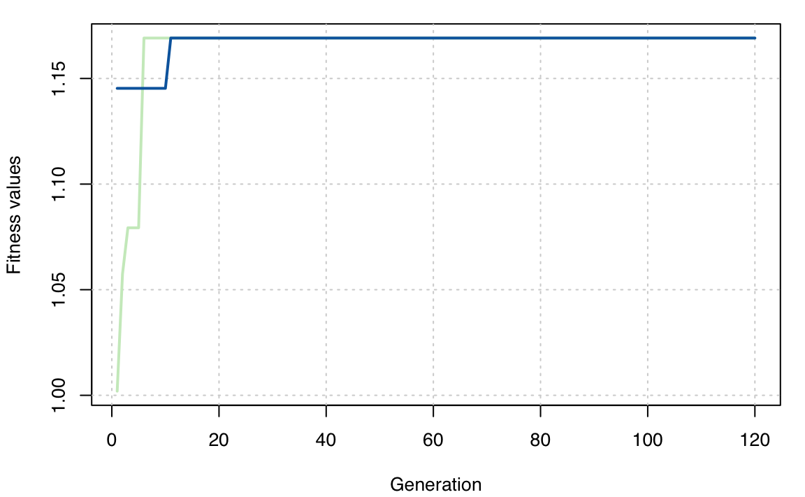
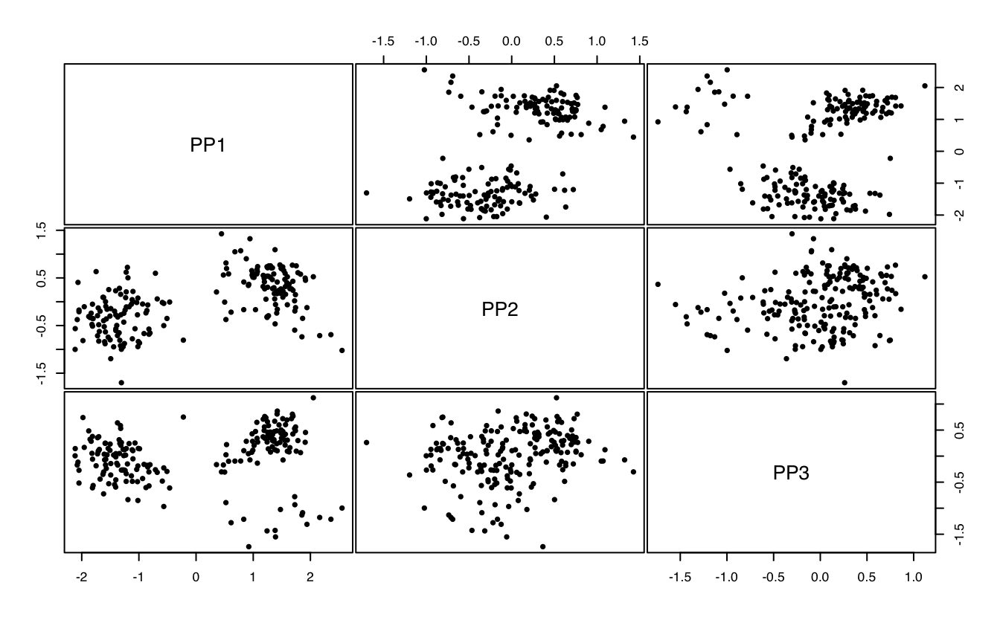
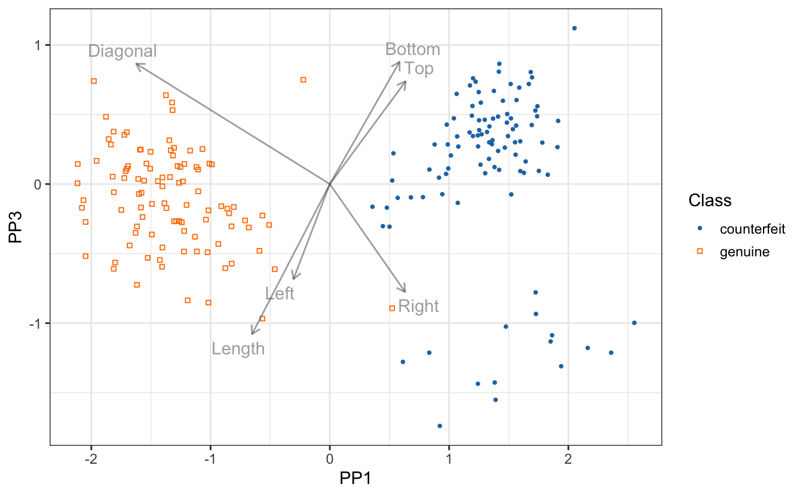

A quick tour of ppgmmga
Alessio Serafini, Luca Scrucca
17 Nov 2023
Source:vignettes/ppgmmga.Rmd
ppgmmga.RmdIntroduction
An R package implementing a Projection Pursuit algorithm based on finite Gaussian Mixtures Models for density estimation using Genetic Algorithms (PPGMMGA) to maximise a Negentropy index. The PPGMMGA algorithm provides a method to visualise high-dimensional data in a lower-dimensional space, with special reference to reveal clustering structures.
Banknote data
library(mclust)
data("banknote")
X <- banknote[,-1]
Class <- banknote$Status
table(Class)
## Class
## counterfeit genuine
## 100 100
clPairs(X, classification = Class,
symbols = ppgmmga.options("classPlotSymbols"),
colors = ppgmmga.options("classPlotColors"))
1-dimensional PPGMMGA
PP1D <- ppgmmga(data = X, d = 1, seed = 1)
PP1D
## Call:
## ppgmmga(data = X, d = 1, seed = 1)
##
## 'ppgmmga' object containing:
## [1] "data" "d" "approx" "GMM" "GA"
## [6] "Negentropy" "basis" "Z"
summary(PP1D)
## ── ppgmmga ─────────────────────────────
##
## Data dimensions = 200 x 6
## Data transformation = center & scale
## Projection subspace dimension = 1
## GMM density estimate = (VEE,4)
## Negentropy approximation = UT
## GA optimal negentropy = 0.6345935
## GA encoded basis solution:
## x1 x2 x3 x4 x5
## [1,] 3.268902 2.373044 1.051365 0.313128 0.531718
##
## Estimated projection basis:
## PP1
## Length -0.0119653
## Left -0.0934775
## Right 0.1602105
## Bottom 0.5740698
## Top 0.3450346
## Diagonal -0.7189203
##
## Monte Carlo Negentropy approximation check:
## UT
## Approx Negentropy 0.634593544
## MC Negentropy 0.633614256
## MC se 0.002249545
## Relative accuracy 1.001545559
plot(PP1D)
plot(PP1D, class = Class)
2-dimensional PPGMMGA
PP2D <- ppgmmga(data = X, d = 2, seed = 1)
summary(PP2D)
## ── ppgmmga ─────────────────────────────
##
## Data dimensions = 200 x 6
## Data transformation = center & scale
## Projection subspace dimension = 2
## GMM density estimate = (VEE,4)
## Negentropy approximation = UT
## GA optimal negentropy = 1.13624
## GA encoded basis solution:
## x1 x2 x3 x4 x5 x6 x7 x8
## [1,] 2.268667 2.929821 1.061407 1.084929 0.30443 3.85462 0.98329 1.11377
## x9 x10
## [1,] 0.167174 1.668403
##
## Estimated projection basis:
## PP1 PP2
## Length -0.0372687 -0.0718319
## Left 0.0312555 -0.1198116
## Right -0.1548079 0.0630092
## Bottom -0.0856931 0.8639049
## Top -0.1024990 0.4603727
## Diagonal 0.9776601 0.1350576
##
## Monte Carlo Negentropy approximation check:
## UT
## Approx Negentropy 1.136240194
## MC Negentropy 1.137260367
## MC se 0.003527379
## Relative accuracy 0.999102956
summary(PP2D$GMM)
## -------------------------------------------------------
## Density estimation via Gaussian finite mixture modeling
## -------------------------------------------------------
##
## Mclust VEE (ellipsoidal, equal shape and orientation) model with 4 components:
##
## log-likelihood n df BIC ICL
## -1191.595 200 51 -2653.405 -2666.898
plot(PP2D$GA)
plot(PP2D)
plot(PP2D, class = Class, drawAxis = FALSE)
3-dimensional PPGMMGA
PP3D <- ppgmmga(data = X, d = 3,
center = TRUE, scale = FALSE,
gatype = "gaisl",
options = ppgmmga.options(numIslands = 2),
seed = 1)
summary(PP3D)
## ── ppgmmga ─────────────────────────────
##
## Data dimensions = 200 x 6
## Data transformation = center
## Projection subspace dimension = 3
## GMM density estimate = (VVE,3)
## Negentropy approximation = UT
## GA optimal negentropy = 1.16915
## GA encoded basis solution:
## x1 x2 x3 x4 x5 x6 x7 x8
## [1,] 4.274545 2.47064 1.055677 1.022896 0.851247 4.924235 1.982288 2.039161
## x9 x10 ... x14 x15
## [1,] 1.939208 2.210582 1.548995 2.489197
##
## Estimated projection basis:
## PP1 PP2 PP3
## Length -0.3145939 0.5612330 -0.5201907
## Left -0.1472768 -0.1498109 -0.3297848
## Right 0.3043823 0.5008715 -0.3739875
## Bottom 0.2818318 0.3353769 0.4238383
## Top 0.3062895 0.4589957 0.3562206
## Diagonal -0.7832300 0.2975690 0.4174266
##
## Monte Carlo Negentropy approximation check:
## UT
## Approx Negentropy 1.16914962
## MC Negentropy 1.17493505
## MC se 0.00430878
## Relative accuracy 0.99507596
plot(PP3D$GA)
plot(PP3D)
plot(PP3D, class = Class)


# A rotating 3D plot can be obtained using
if(!require("msir")) install.packages("msir")
msir::spinplot(PP3D$Z, markby = Class,
pch.points = c(20,17),
col.points = ppgmmga.options("classPlotColors")[1:2])References
Scrucca L, Serafini A (2019). “Projection pursuit based on Gaussian mixtures and evolutionary algorithms.” Journal of Computational and Graphical Statistics, 28(4), 847–860. https://doi.org/10.1080/10618600.2019.1598871.
sessionInfo()
## R version 4.3.0 (2023-04-21)
## Platform: x86_64-apple-darwin20 (64-bit)
## Running under: macOS Ventura 13.6
##
## Matrix products: default
## BLAS: /Library/Frameworks/R.framework/Versions/4.3-x86_64/Resources/lib/libRblas.0.dylib
## LAPACK: /Library/Frameworks/R.framework/Versions/4.3-x86_64/Resources/lib/libRlapack.dylib; LAPACK version 3.11.0
##
## locale:
## [1] en_US.UTF-8/en_US.UTF-8/en_US.UTF-8/C/en_US.UTF-8/en_US.UTF-8
##
## time zone: Europe/Rome
## tzcode source: internal
##
## attached base packages:
## [1] stats graphics grDevices utils datasets methods base
##
## other attached packages:
## [1] mclust_6.0.1 ppgmmga_1.3 knitr_1.44
##
## loaded via a namespace (and not attached):
## [1] sass_0.4.6 utf8_1.2.4 generics_0.1.3 GA_3.2.3
## [5] stringi_1.7.12 digest_0.6.33 magrittr_2.0.3 evaluate_0.22
## [9] grid_4.3.0 iterators_1.0.14 fastmap_1.1.1 foreach_1.5.2
## [13] rprojroot_2.0.3 jsonlite_1.8.7 purrr_1.0.1 fansi_1.0.5
## [17] scales_1.2.1 codetools_0.2-19 jquerylib_0.1.4 cli_3.6.1
## [21] rlang_1.1.1 crayon_1.5.2 munsell_0.5.0 withr_2.5.1
## [25] cachem_1.0.8 yaml_2.3.7 tools_4.3.0 memoise_2.0.1
## [29] dplyr_1.1.2 colorspace_2.1-0 ggplot2_3.4.3 vctrs_0.6.4
## [33] R6_2.5.1 lifecycle_1.0.3 stringr_1.5.0 fs_1.6.3
## [37] pkgconfig_2.0.3 desc_1.4.2 pkgdown_2.0.7 bslib_0.4.2
## [41] pillar_1.9.0 gtable_0.3.4 glue_1.6.2 Rcpp_1.0.11
## [45] xfun_0.40 tibble_3.2.1 tidyselect_1.2.0 rstudioapi_0.15.0
## [49] farver_2.1.1 htmltools_0.5.6 rmarkdown_2.22 labeling_0.4.3
## [53] compiler_4.3.0